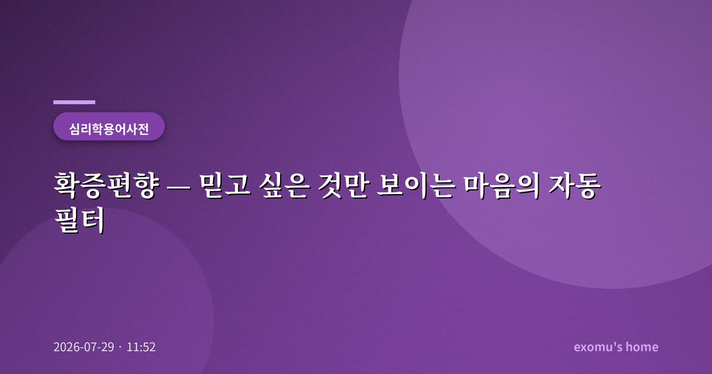
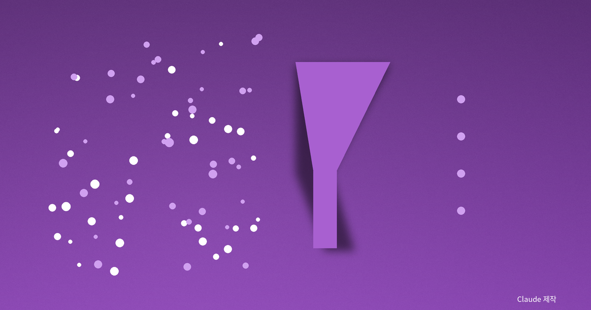
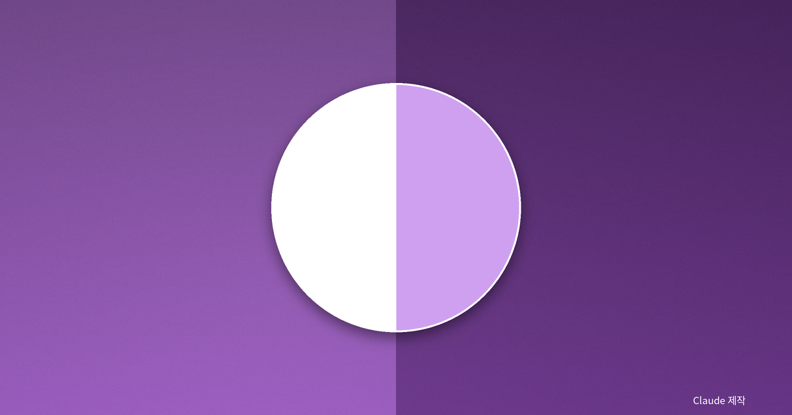
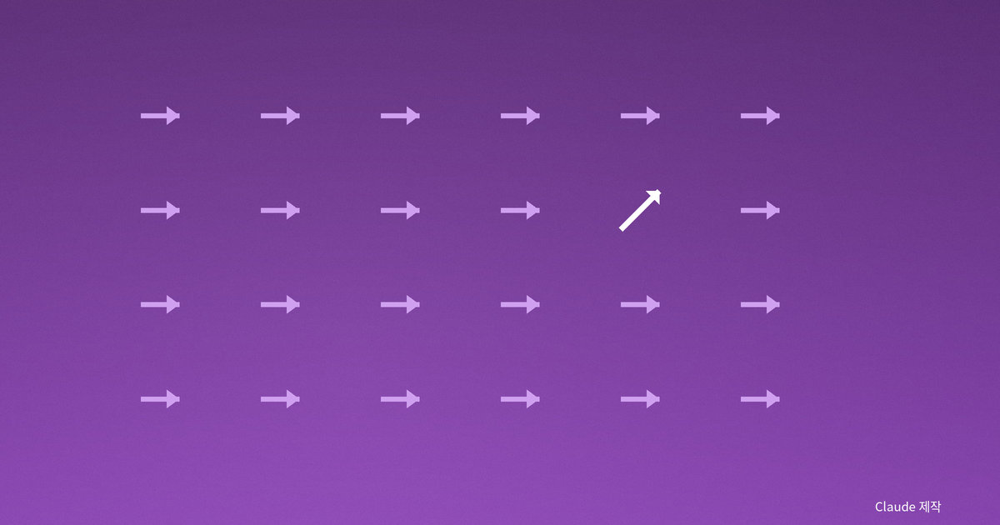
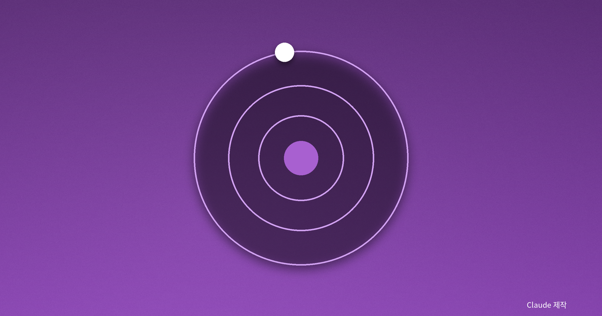

확증편향 — 믿고 싶은 것만 보이는 마음의 자동 필터

정의: 결론이 먼저, 증거는 나중
확증편향(confirmation bias)은 자신이 이미 가진 믿음이나 가설을 지지하는 정보만 골라 받아들이고, 그에 어긋나는 정보는 무시하거나 축소하는 경향을 말한다. 핵심은 순서가 뒤집혀 있다는 데 있다. 보통 우리는 증거를 모아 결론에 이른다고 믿지만, 실제로는 결론이 먼저 정해지고 그 결론을 떠받칠 증거를 나중에 찾아 나서는 경우가 훨씬 많다.
이 편향이 무서운 이유는 스스로 편향되었다는 사실을 거의 느끼지 못한다는 데 있다. 내가 고른 정보들이 하나같이 내 생각과 맞아떨어지니, 나는 점점 더 '내가 옳다'는 확신에 빠진다. 편향은 조용히, 그리고 나를 기분 좋게 만들면서 작동한다.

워슨의 선택 과제
확증편향을 실험실로 끌고 들어온 사람은 영국의 심리학자 피터 워슨이다. 그는 1960년대에 사람들에게 어떤 규칙을 따르는 숫자 열을 보여 주고 그 규칙을 알아맞히게 하는 과제를 냈다. 참가자들은 대부분 자신이 세운 가설에 '들어맞는' 사례만 골라 시험했고, 가설을 '깨뜨릴' 수 있는 반례는 좀처럼 시도하지 않았다. 그 결과 엉뚱한 규칙을 오래도록 옳다고 믿었다.
워슨이 보여 준 것은 인간이 자기 생각을 반증하기보다 확증하려 든다는 사실이었다. 후대의 심리학자 레이먼드 니커슨은 이 경향이 특정한 사람의 결함이 아니라 인간 사고 전반에 퍼져 있는 기본 설정에 가깝다고 정리했다. 똑똑함이 편향을 막아 주지도 않는다. 오히려 머리가 좋을수록 자기 입장을 방어할 논리를 더 정교하게 지어낸다.
이 실험이 특히 뼈아픈 이유는, 참가자들이 게으르거나 어리석어서가 아니라 지극히 합리적으로 보이는 방식으로 행동했는데도 함정에 빠졌다는 데 있다. 가설을 뒷받침하는 사례를 모으는 것은 언뜻 타당한 검증처럼 느껴진다. 그러나 과학이 발전해 온 방식은 정반대였다. 어떤 이론이 옳음을 증명하는 것이 아니라, 그것을 반증하려는 온갖 시도를 견뎌 냈을 때 비로소 그 이론은 신뢰를 얻는다. 우리의 일상적 사고는 이 과학의 태도와 정확히 어긋나 있다.

왜 뇌는 이렇게 설계됐나
확증편향은 게으름이 아니라 효율의 산물이다. 세상의 모든 정보를 매번 공정하게 저울질하기에는 우리의 인지 자원이 턱없이 부족하다. 그래서 뇌는 이미 검증했다고 여기는 믿음을 기본값으로 두고, 그것을 지키는 쪽으로 지름길을 낸다. 여기에 감정도 한몫한다. 내 믿음이 부정당하는 것은 곧 '내가 틀렸다'는 불편한 감정을 부르기 때문에, 우리는 본능적으로 그 불편을 피한다.
문제는 이 편리한 지름길이 집단으로 확장될 때다. 비슷한 생각을 가진 사람들끼리 모이고, 알고리즘이 좋아할 만한 정보만 골라 보여 주면, 확증편향은 개인의 착각을 넘어 사회의 양극화로 자란다. 각자가 본 세상이 서로 너무 다르니 대화가 성립하지 않는다.

일상 속 확증편향
확증편향은 거창한 논쟁에만 있지 않다. 어떤 사람을 처음에 '별로'라고 판단하면 그의 실수만 눈에 들어오고 잘한 일은 우연으로 넘긴다. 사고 싶은 물건을 정해 놓고 후기를 검색하면 좋은 후기만 눈에 박힌다. 건강 정보를 찾을 때도 이미 하고 싶은 습관을 정당화해 주는 글에 먼저 손이 간다. 검색창은 우리에게 진실보다 '원하는 답'을 찾아 주는 데 능하다.
특히 오늘날에는 이 편향이 기술과 결합하면서 훨씬 촘촘해졌다. 추천 알고리즘은 내가 오래 머문 콘텐츠와 비슷한 것을 계속 밀어 주고, 그 결과 나는 세상이 온통 내 생각에 동의한다는 착각 속에 갇힌다. 정보가 많아질수록 편향이 옅어질 것 같지만, 실제로는 정반대로 강해질 수 있다는 역설이 여기에 있다.

빠져나오는 법
완전히 벗어날 수는 없지만 힘을 뺄 수는 있다. 나는 어떤 확신이 들 때 일부러 '내가 틀렸다면 그 증거는 무엇일까'를 한 번 물어보는 습관을 들이려 한다. 반대 입장의 가장 똑똑한 주장을 일부러 찾아 읽고, 내 결론을 반증할 조건을 미리 정해 두는 것이다. 워슨의 과제가 가르쳐 준 교훈은 단순하다. 내 가설을 확인하려 들지 말고, 깨뜨리려고 시도해 볼 것. 살아남은 믿음만이 조금 더 믿을 만하다.